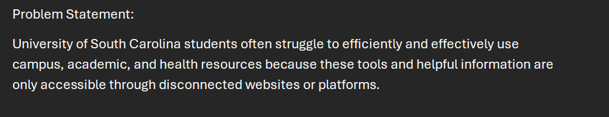
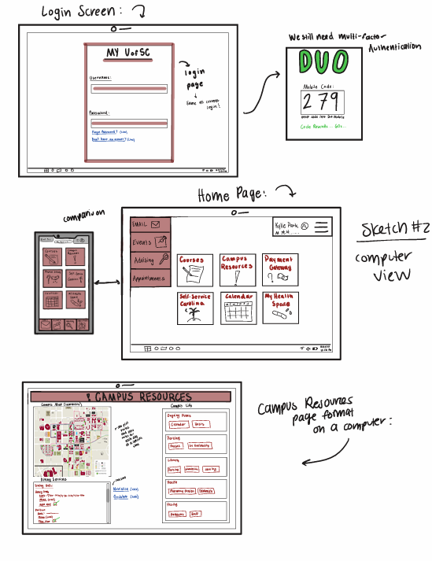

Highlighted projects
Problem Statement
University of South Carolina students often struggle to efficiently and effectively use campus, academic, and health resources because these tools and helpful information are only accessible through disconnected platforms.
Affinity Diagram

The Affinity Diagram describes circumstances, problems, ideas, and tasks related to the above problem statement. It describes the product's features, user interactions, logistical and operational issues, financial circumstances, and legal considerations.
Sketches
My sketches display the mobile and computer usage of the singular platform for all of the UofSC websites. The third sketch shows flow diagrams that describe the behind the scenes.